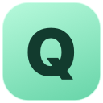

VaultEXPERIMENTALSet up your vault
Checking this device…
- 1Cloud storage
- 2Passkey
- 3Second lock
- 4Recovery key
Cloud storage
Where your encrypted vault is kept.
SAVE THIS NOW
Your recovery key
This key opens your vault if you lose your passkey, move the extension, or restore a backup on another computer. It is shown only once and is not stored anywhere by QVault. Write it down or print it and keep it somewhere safe, away from this computer. Anyone with this key and a copy of your vault profile can open your vault.
Your vault is ready
Click the QVault icon in the browser toolbar and choose Unlock with passkey. You can close this tab.
How it works and what is stored
- Built on Quilibrium. Your encrypted vault is kept in your own QStorage bucket, and the optional second lock uses the QKMS key service. You need a Quilibrium account with an access key for both.
- Passkey, no master password. You unlock with a passkey, for example Touch ID. There is nothing to type or to guess.
- Only you can read your vault. A random key is created on this computer and kept inside your encrypted profile. Cloud storage only ever receives encrypted data.
- Second lock (optional). A QKMS key is split in two: one half stays with the QKMS service, the other in your profile. The service only handles data that is already locked with your own key.
- Recovery key. Shown once at the end. It is the only way in if the passkey is lost; without both, nobody can recover the vault.
- Access key and secret. They sign requests to your storage, are saved inside the encrypted profile, and the fields are cleared after you submit.
- Other computers. Download the encrypted profile on the Backup & restore page and restore it there. A passkey synced to that computer unlocks it; otherwise use the recovery key.
- If setup fails, nothing is saved. An unused QKMS key and passkey may be left behind.
This is an unaudited preview. A computer that is compromised while the vault is unlocked can read it. Storage setup help